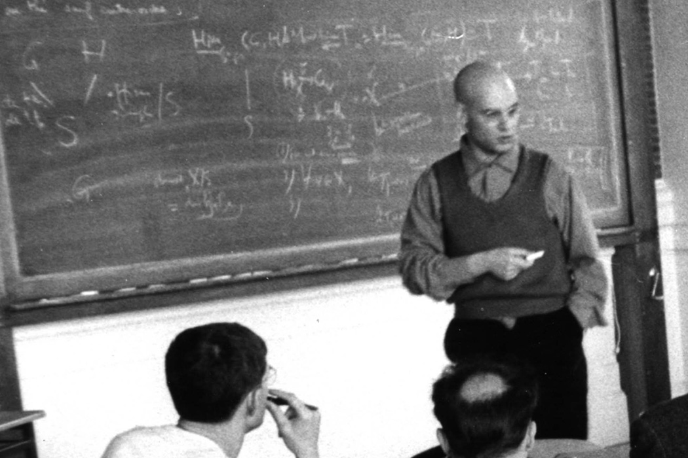

Amy Searle
I am a researcher and writer, with a PhD in Physics which I completed at Oxford in 2024.

My research was on contextuality, a phenomena that occurs in quantum mechanics in which local 'snapshots' of the system look normal, but when you piece them together there is a contradiction. We say it is 'locally consistent but globally inconsistent'. This is a bit like the M.C. Escher drawing on the right (titled 'Relativity').
You can find more about my work through the links above. Through science, I have become increasingly interested in the way in which society interacts with science and technology.

Here is a photo at a workshop celebrating Samson Abramsky's research that I attended in 2023. Samson was my supervisor and amongst other things, used the mathematics of sheaves to study quantum contextuality. This was done together with Adam Brandenburger.

Sheaves were developed by the mathematician Grothendieck, widely considered to be the greatest mathematician of the 20th century. That's Grothendieck on the right. Google him if you haven't already, he was a remarkable person (and not just because he was good at maths..)